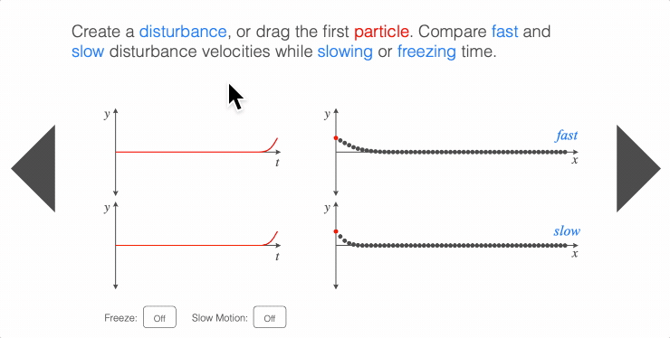
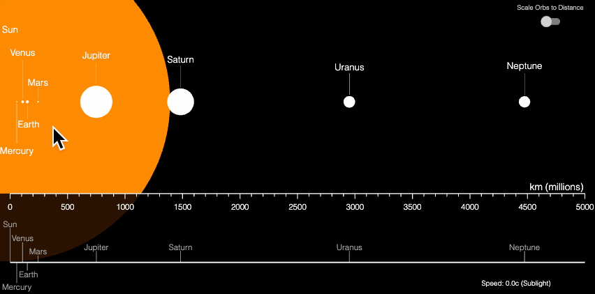

figureone
FigureOne
Draw, animate and interact with shapes, text, plots and equations.
This JavaScript library can be used for making animated and/or interactive content for the web including:
- Diagrams
- Equations
- Plots
- Presentations or slide shows
- Video-like experiences
Note: for the video-like experiences, FigureOne creates a custom vector video format which is interactive, resolution independent, and a fraction of the size of an normal audio track. This results in very low bandwidth video. For example, 4 minutes of animated content might result in a video track 70KB in size. See below for some examples of interactive videos. More information on this, and the trade-offs with traditional video can be found in the API Reference.
FigureOne can also be used to create animations (like equation animations) that can then be screen captured and merged into a standard video file.
See the Tutorials, API Reference and Examples and you'll be making beautiful, interactive figures in no time.
The examples are also hosted (and thus can be directly interacted with) on this repository's GitHub Pages site here.

The library used to draw interactive slides at thisiget.com.
Getting Started
Load the FigureOne library into your HTML file:
<script type="text/javascript" src='https://cdn.jsdelivr.net/npm/figureone@0.15.10/figureone.min.js'></script>
Create a div element to attach the figure to:
<div id="figureOneContainer" style="width: 500px; height: 500px; background-color: white;"></div>
Then in javascript, create a figure and a shape within it:
const figure = new Fig.Figure();
// Create the shape
const tri = figure.add({
make: 'triangle',
color: [1, 0, 0, 1],
});
// Animate the shape
tri.animations.new()
.position(0.5, 0)
.rotation(Math.PI)
.position(0, 0)
.start();
And you will see:

The Tutorials build on this and introduce FigureOne's concepts and features in simplified examples. The API Reference describes these concepts in more depth as well as provides detailed API documentation. Consider reviewing these first before diving into the code of the examples below.
Examples
[Interactive Angle](media/Interactive Angle)
See this example hosted here.

[Equation Animation](media/Equation Animation)
See this example hosted here.
Note: This is an animated gif, whose encoding makes the text look less smooth than in the actual hosted example.

[Pythagorean Equation Animation](media/Pythagorean Theorem)
See this example hosted here.

[Create a Sine Wave](media/Sine Wave)
See this example hosted here.

[Total Angle of a Polygon](media/Total Angle of a Polygon)
See this example hosted here.

[Sine Limit](media/Sine Limit)
See this example hosted here.

[Traveling Wave 01 - Shifting Equations](media/Traveling Wave 01 - Shifting Equations)
See this example hosted here.

[Traveling Wave 02 - Sine Wave](media/Traveling Wave 02 - Sine Waves)
See this example hosted here.

[Traveling Wave 03 - Velocity Frequency Wavelength](media/Traveling Wave 03 - Velocity Frequency Wavelength)
See this example hosted here.


[Holiday Equation](media/Holiday Equation)
See this example hosted here.

[Interactive Video - Tiling](media/Interactive Video - Tiling)
See this example hosted here.

[Interactive Video - Trig 1 - Trig Functions](media/Interactive Video - Trig 1 - Trig Functions)
See this example hosted here.

[Interactive Video - Trig 2 - Names](media/Interactive Video - Trig 2 - Names)
See this example hosted here.

[Interactive Video - Trig 3 - Relationships](media/Interactive Video - Trig 3 - Relationships)
See this example hosted here.

[Electric Field](media/Electric Field)
See this example hosted here.
Demonstrator of how shaders can be used to animate over 1000 elements simultaneously and still get excellent performance on low end clients.

[3D Electric Field](media/3D Electric Field)
See this example hosted here.
Visualize and interact with 3D figures.

Mandelbrot Set
See this example hosted here.
Use shaders and gestures to explore the Mandelbrot set.

[Solar System](media/Solar System)
See this example hosted here.
Use a plot that can be panned and zoomed to explore the scale of the planets in the solar system.

NPM Package
On projects that are bundled with tools such as Webpack, it can be useful to use the FigureOne NPM package:
npm install figureone
Then within your project you can:
import Fig from 'figureone';
const figure = new Fig.Figure();
Flow typed files are included in the package for type checking in the editor.